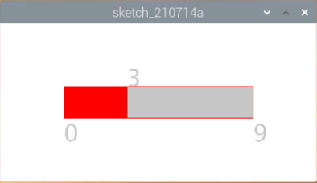

Nota
Ciao, benvenuto nella Community di Facebook dedicata agli appassionati di SunFounder Raspberry Pi, Arduino e ESP32! Approfondisci le tue conoscenze su Raspberry Pi, Arduino e ESP32 insieme ad altri appassionati.
Perché unirsi a noi?
Supporto Esperto: Risolvi problematiche post-vendita e sfide tecniche con l’aiuto della nostra comunità e del nostro team.
Impara e Condividi: Scambia consigli e tutorial per migliorare le tue competenze.
Anteprime Esclusive: Ottieni accesso anticipato agli annunci di nuovi prodotti e alle anteprime.
Sconti Speciali: Approfitta di sconti esclusivi sui nostri prodotti più recenti.
Promozioni Festive e Giveaway: Partecipa a concorsi e promozioni speciali.
👉 Sei pronto a esplorare e creare con noi? Clicca su [Qui] e unisciti subito!
Controllo del Numero con Slider
In questo progetto, disegneremo una barra di scorrimento per controllare il display a 7 segmenti.
Collegamenti

Sketch
import processing.io.*;
int number = 0;
int levelRange=9;
Slider mySlider;
int SDI = 17; // ingresso dati seriali
int RCLK = 18; // ingresso clock di memoria (STCP)
int SRCLK = 27; // ingresso clock del registro a scorrimento (SHCP)
int[] SegCode= {0x3f,0x06,0x5b,0x4f,0x66,0x6d,0x7d,0x07,0x7f,0x6f,0x77,0x7c,0x39,0x5e,0x79,0x71};
void hc595_shift(int dat){
int i;
for(i=0;i<8;i++){
int n=(0x80 & (dat << i));
if ( n==0){
GPIO.digitalWrite(SDI, 0);
} else {
GPIO.digitalWrite(SDI, 1);
}
GPIO.digitalWrite(SRCLK, 1);
delay(1);
GPIO.digitalWrite(SRCLK, 0);
}
GPIO.digitalWrite(RCLK, 1);
delay(1);
GPIO.digitalWrite(RCLK, 0);
}
void setup() {
size(400, 200);
frameRate(50);
mySlider = new Slider(width * 0.2,height * 0.4,width * 0.8,height * 0.6,0,levelRange,number);
GPIO.pinMode(SDI, GPIO.OUTPUT);
GPIO.pinMode(RCLK, GPIO.OUTPUT);
GPIO.pinMode(SRCLK, GPIO.OUTPUT);
GPIO.digitalWrite(SDI, 0);
GPIO.digitalWrite(RCLK, 0);
GPIO.digitalWrite(SRCLK, 0);
}
void draw() {
background(255);
mySlider.show();
hc595_shift(SegCode[number]);
}
void mouseDragged(){
number = mySlider.dragPoint(mouseX,mouseY);
}
class Slider{
float slotPointAX;
float slotPointBX;
float slotPointAY;
float slotPointBY;
float linePoint;
float depth;
int maxRange;
int minRange;
int value;
Slider(float ax, float ay, float bx, float by, int min, int max, int v){
slotPointAX = ax;
slotPointAY = ay;
slotPointBX = bx;
slotPointBY = by;
maxRange = max;
minRange = min;
value = v;
linePoint = slotPointAX;// + map(value, minRange, maxRange, slotPointAX, slotPointBX);
depth = (slotPointBY - slotPointAY)*0.75;
}
void show(){
rectMode(CORNERS);
fill(200);
stroke(255,0,0);
rect(slotPointAX, slotPointAY, slotPointBX, slotPointBY);
fill(255,0,0);
rect(slotPointAX, slotPointAY, linePoint, slotPointBY);
fill(200);
textSize(depth);
text(minRange, slotPointAX, slotPointBY+depth);
text(maxRange, slotPointBX, slotPointBY+depth);
text(value, linePoint, slotPointAY);
}
int dragPoint(float mx, float my){
if(mx>=slotPointAX && mx<=slotPointBX && my>=slotPointAY && my<=slotPointBY){
value = int(map(mx,slotPointAX,slotPointBX,minRange,maxRange));
linePoint = map(value,minRange,maxRange,slotPointAX,slotPointBX);
}
return value;
}
}
Come funziona?
Questo progetto integra lo Slider e il Display a 7 segmenti del corso precedente. Per punti di riferimento specifici, consulta Mostrare un Numero e Metronomo.